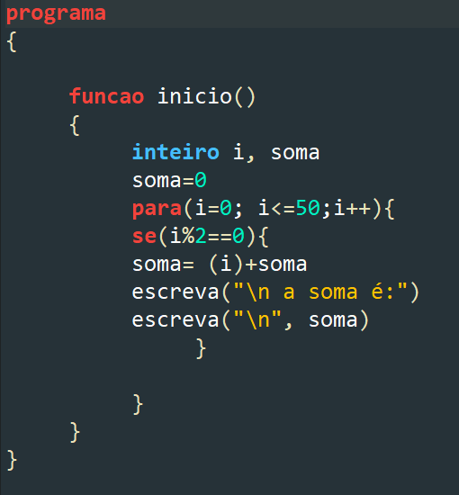
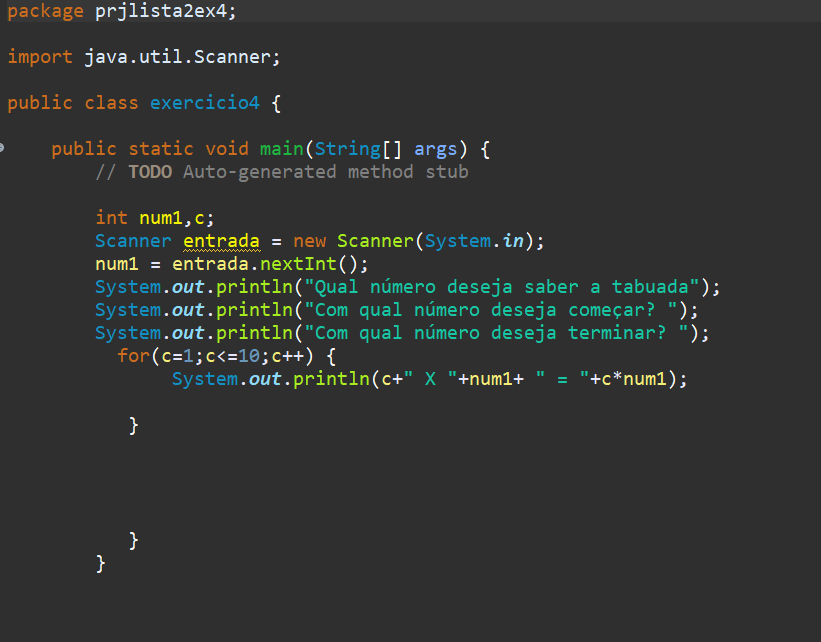
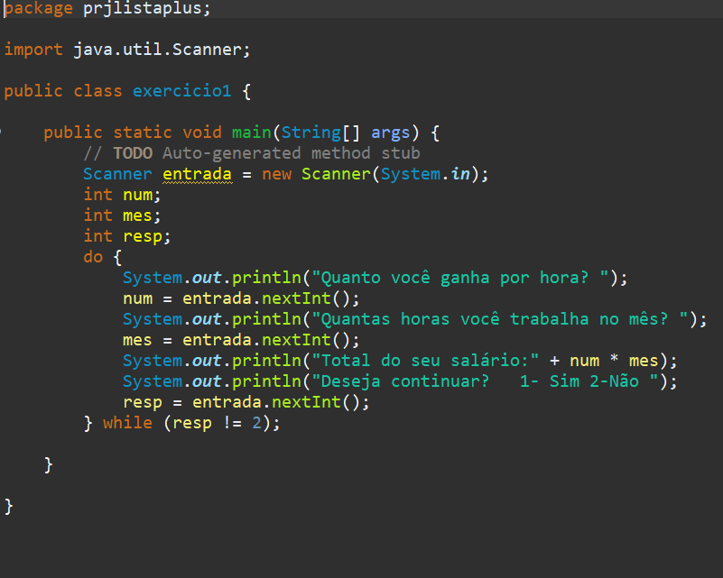
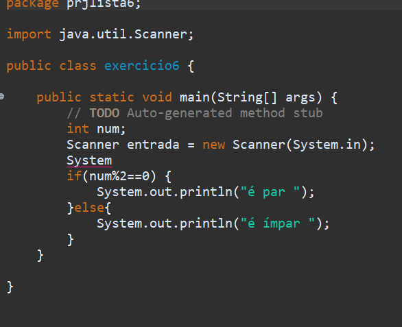
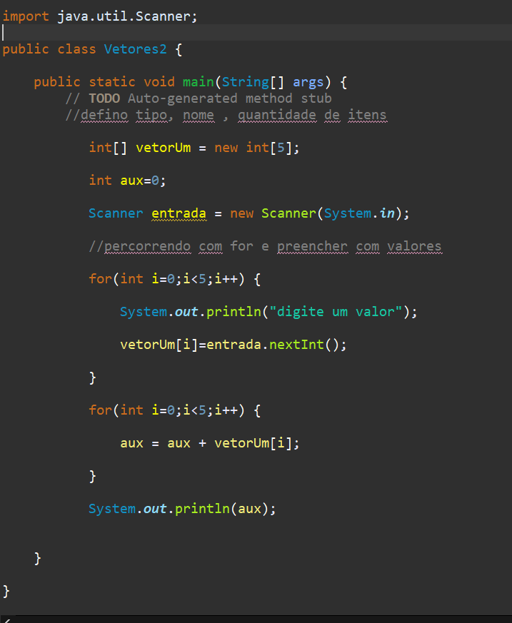

Durante o mês de março nós entramos em contato pela primeira vez com a estrutura de caso:
Imagem relativa ao primeiro exercício da lista. Nas atividades propostas para esse conceito não tive muita dificuldade, tivemos que exibir todos os númers de 1 a 50 na tela.
O exercício abaixo é referente ao exercício 4 da lista 2. O qual realizava a multiplicação dos números dados pelo usuário
No mês de abril aprendemos sobre a conceito de Faça/enquanto ou Do/While, neste exercício eu tive que perguntar para o usuário, quantas horas ele trabalhava no mês, quanto ganhava por hora e exibir o total do salário
A estrutura If/Else ou Se/Senão, que é uma estrutura de decisão. Foi um conteúdo que também não tive muitas dificuldade. O exercício da imagem é um exemplo
Agora a imagem é sobre o conteúdo de vetores, esse eu tenho muita dificuldade. Caracteriza-se por ser definida uma única variável vinculada dimensionada com um determinado tamanho. A dimensão de uma matriz é constituída por constantes inteiras e positivas.
